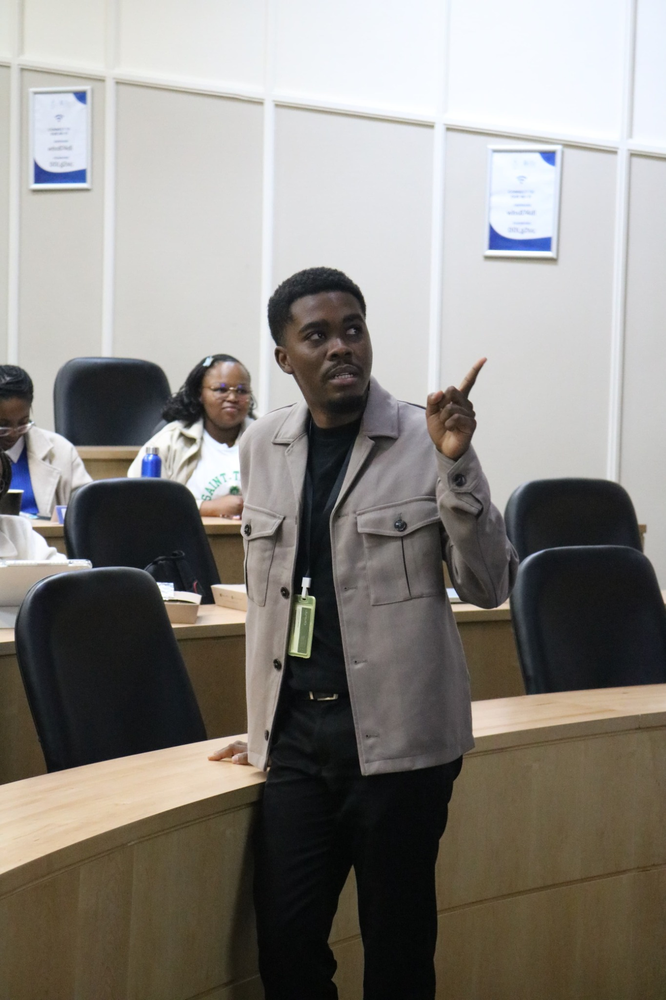
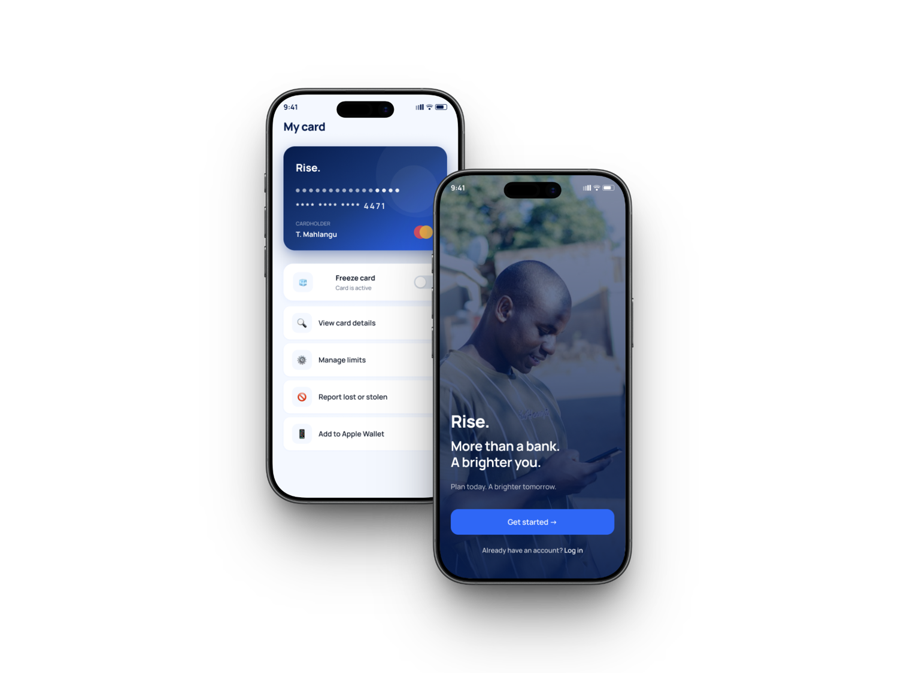
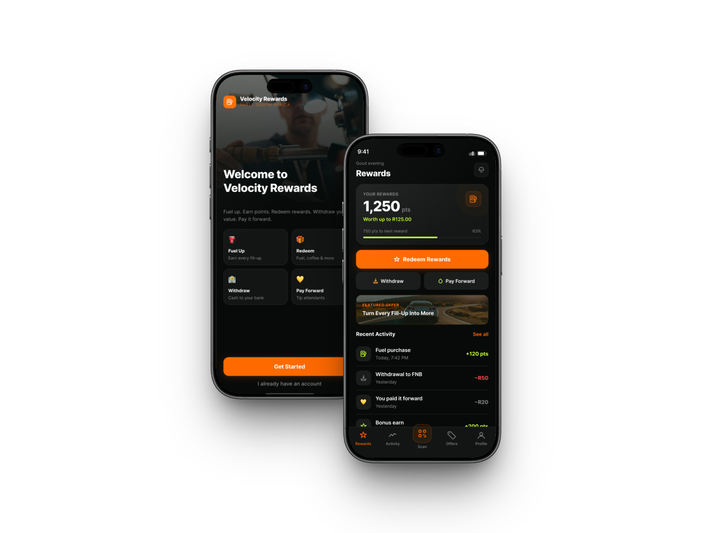

Stanslous Nhau
UX Designer
I research people’s needs and design digital products around them. My BCom in Statistics helps me question assumptions, spot patterns in evidence and make clearer design decisions.

Enterprise API Ecosystem Research
Uncovering why API discovery, reuse and collaboration were breaking down inside a Tier-1 African banking ecosystem. The research showed why tooling alone could not solve it.
I designed the stakeholder interview protocol, independently led 9 of 16 interviews, facilitated affinity mapping and helped turn the evidence into six themes and a strategic shift from a tooling problem to a wider operating-model challenge.
Explore case study →
RISE: Real Income, Steady Earnings
Designing financial breathing room for young South Africans navigating the first months after a first paycheck.
Explore case study →
Velocity Rewards MVP
Reimagining fuel rewards around visible value, flexible redemption, payment freedom and intentional digital tipping.
Explore case study →I moved into UX to connect evidence with people’s everyday experiences.
I completed a BCom in Statistics at Nelson Mandela University, where I learned to examine data, recognise patterns and question assumptions. I wanted to apply that analytical foundation to problems that affect people directly, which led me to UX research and product design.
My UX training has helped me build skills in understanding user needs, planning research, synthesising findings and translating insights into product concepts and design decisions. I bring both qualitative evidence and quantitative reasoning to the work, while being clear about what the evidence can, and cannot, tell us.
I also facilitate UX research classes and research programmes, supporting learners as they practise research methods and user-centred problem-solving. Facilitation has strengthened my ability to explain complex ideas clearly, guide group discussions and help teams build shared understanding.
Have an interesting problem or opportunity?
I’m open to UX Designer opportunities where I can bring research, analytical thinking and product design together.